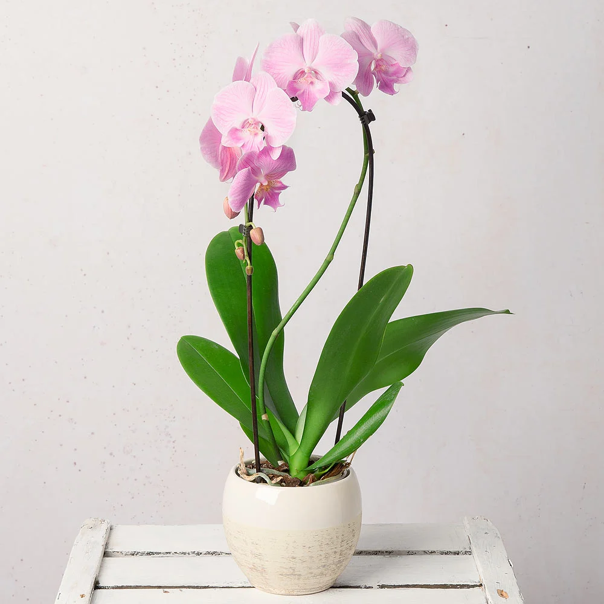

Common Name: orchid
Botanical Name: Phalaenopsis
Chinese Name: 蝴蝶兰

Phalaenopsis / orchid |

Phalaenopsis / orchid |
Phalaenopsis / orchid |
|
Other references
RHS
Gardenia
Gardeners' World
thespruce
Use small containers, so the plants remain quite tight – clear plastic pots work well and allow the green roots to photosynthesise. Use a light, free-draining, open compost containing pumice or charcoal (specialist orchid composts are available). It’s quite natural for the roots to come out of their pot, but be careful not to snap them off when repotting.
Moth orchids are epiphytic plants meaning that in the wild they grow on the surface of other plants, rather than in the soil. So while they need humidity, they don’t do well when overwatered.
Water once every week or two, with rainwater if possible, or boiled and cooled tap water. Use either specialist orchid fertiliser or a dilution of other house plant food every couple of weeks.
After flowering, cut back the flower spike to just above the first node. Your moth orchid should produce a new flower spike from this point.
You can repot your moth orchid after flowering, but this isn’t essential. However, always wait until flowering has finished, as disturbing the roots will cause the plants to drop flowers.
They are grown in very loose, airy Can refer to either home-made garden compost or seed/potting compost:• Garden compost is a soil improver made from decomposed plant waste, usually in a compost bin or heap. It is added to soil to improve its fertility, structure and water-holding capacity. • Seed or potting composts are used for growing seedlings or plants in containers – a wide range of commercially produced composts are available, made from a mix of various ingredients, such as loam, coir, peat, sand and fertiliser, although you can mix your own. compost, mainly made of composted bark. Keeping the roots in good condition – not too wet or too dry – is the key to success with moth orchids.
Water moth orchids weekly throughout the growing season, but reduce watering slightly in winter. Never let the roots dry out completely and never let plants sit in water. Always let excess water drain away. Ideally use tepid water, preferably rainwater. When watering, take care not to splash the leaves or get water into the crown (The crown is usually at the base of herbaceous plants, often identified by buds at ground level, usually where the roots and stems join at soil level. See plants such as rhubarb, chrysanthemum or Hylotelephium (sedum). 2) A crown can refer to the branches on a tree located at the top of a trunk, for example the canopy of an oak. crown), although you can mist the plant lightly in summer to increase humidity.
Water moth orchids lightly, about once a week. Water from above and tip out any water that collects in the saucer. Alternatively, hold the container under a gently running tap, being careful not to wet the leaves, or stand it in a bowl of water, then allow to drain thoroughly.
- Can bloom at any time of year
- Like bright light, but not direct summer sun
- Keep above 16°C (60˚F)
- Keep plants away from radiators and heaters, and out of draughts, as they dislike fluctuating temperatures.